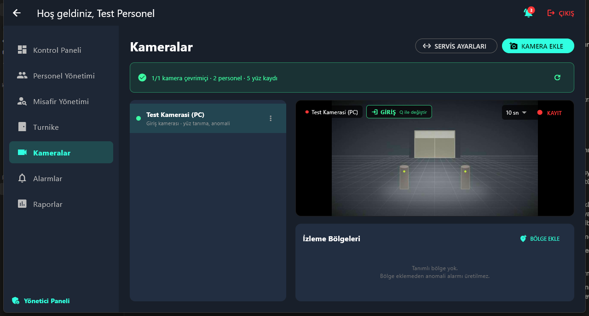
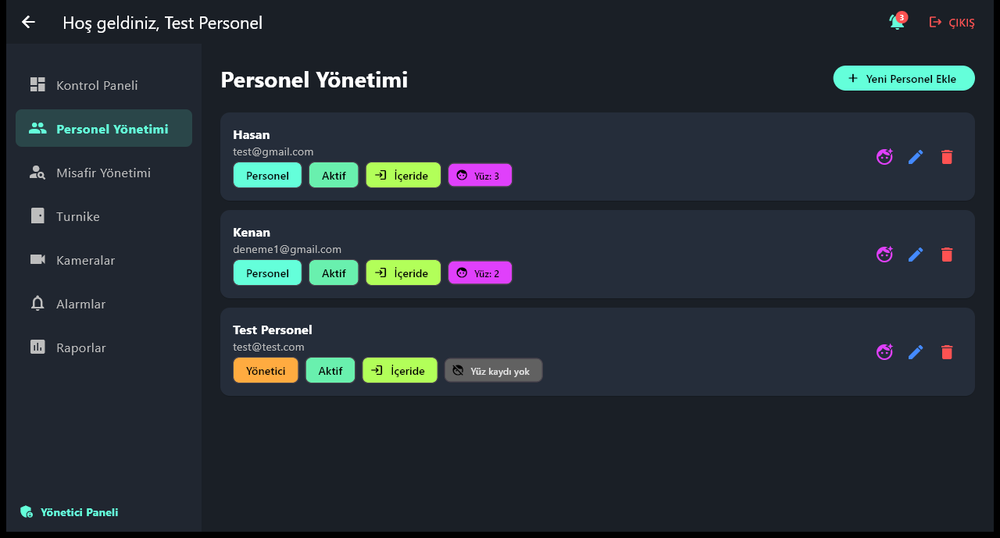
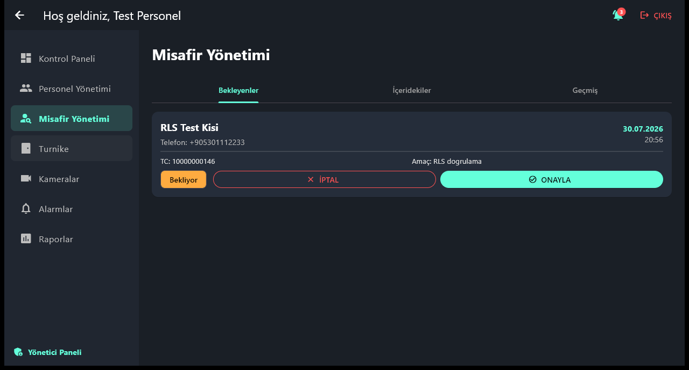
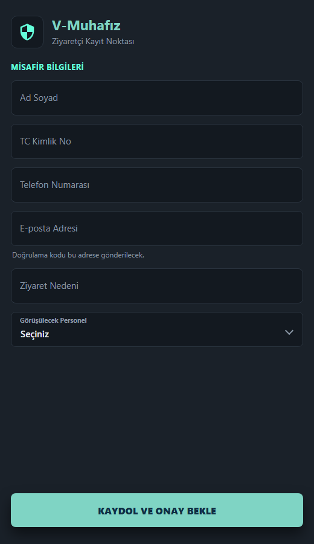
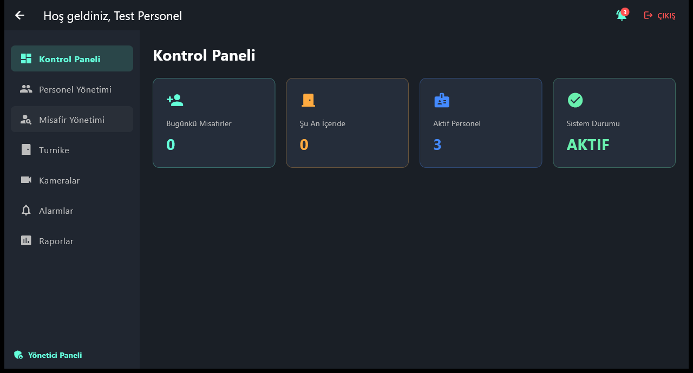
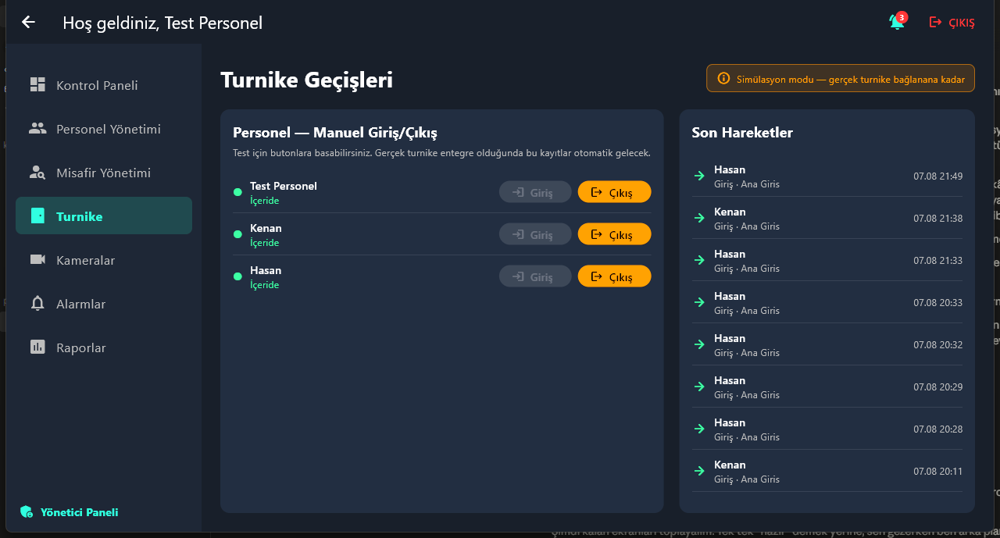
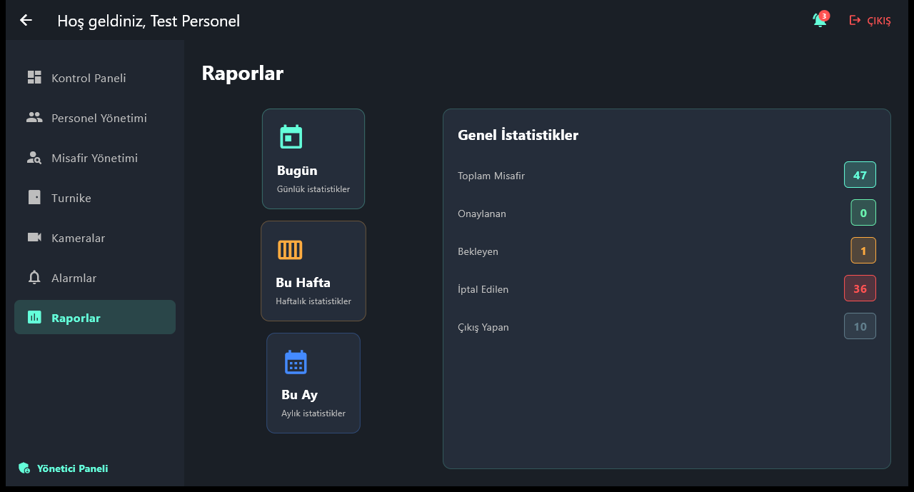

Ziyaretçi yönetimi
- Kayıt formu ve SMS ile doğrulama kodu
- Kimlik kartından otomatik form doldurma — OCR ve MRZ kontrol hanesi doğrulaması
- Personel onayı, çıkış ve iptal akışları
- Ziyaret edilecek personelin binada olup olmadığını kayıt anında gösterme
Ziyaretçi kaydı, personel giriş-çıkış takibi, turnike entegrasyonu ve kamera tabanlı görüntü işleme — kamu kurumları için tek sistemde. Defter ve fotokopi yerine, aranabilir ve raporlanabilir kayıt.

Elle tutulan kayıtlar okunmuyor, aranmıyor ve olay sonrası hiçbir soruya cevap vermiyor. Bu sistem aynı işi, sorgulanabilir bir veriye çeviriyor.
Modüller birbirinden bağımsız çalışır; kurum ihtiyacına göre yalnızca bir kısmı devreye alınabilir.
Herkes yalnızca kendi işini görür. Yönetici sistemi kurar, güvenlik personeli kapıyı yönetir, ziyaretçi kendi kaydını yapar.
Sistemi kuran ve denetleyen kişi. Günlük kapı işleriyle uğraşmaz; kimin hangi yetkiyle nerede görüneceğini belirler.

Masada oturan kişi. Gün boyu tek ekrandan çalışır; kimin beklediğini, kimin içeride olduğunu ve kapıda ne olduğunu aynı anda görür.

Kuyrukta beklemez, deftere yazmaz. Kaydını girişte kendi telefonundan yapar; güvenlik personeli yalnızca onaylar.
QR ile kayıt. Girişteki QR kodu telefonuyla okutur, kayıt formu tarayıcısında açılır. Uygulama indirmesi, hesap açması ya da bankoda beklemesi gerekmez.

Çalışan sistemden alınmış görüntüler. Kamera önizlemesindeki sahne tanıtım için üretilmiş bir demo akışıdır.

Kontrol Paneli — güvenlik masasının açılışta gördüğü ekran: bugünkü misafir sayısı, o an içeride olanlar, aktif personel ve sistem durumu.

Turnike — geçişler sağdaki akışa anında düşer. Turnike henüz bağlı değilse aynı ekran elle giriş-çıkış için kullanılır.

Raporlar — gün, hafta veya ay seçilir; misafir sayıları ve durum dağılımı çıkar.
Ziyaretçi kimliğini uzatır; kart okunur, form otomatik dolar ve MRZ kontrol hanesiyle doğrulanır. Telefona giden kodla numara teyit edilir. Görüşülecek personelin binada olup olmadığı aynı ekranda görünür.
İlgili personel kaydı onaylar. Personelin kendi geçişi ise turnikeden ya da kapı kamerasındaki yüz tanımayla kartsız yapılır; her geçiş yönüyle, kapısıyla ve kanıt fotoğrafıyla kaydedilir.
Çıkış kaydedilir, açık kalan ziyaretler listede kalır. Bina içindeki kameralar yasak bölge, kalabalık ve oyalanma için izlemeye devam eder; alarmlar ve geçişler tarih aralığıyla raporlanır.
6698 sayılı kanun kapsamında biyometrik veri özel nitelikli sayılır. Sistem bunu bir ayar değil, zorunluluk olarak ele alır.
Kurumun tamamlaması gerekenler: aydınlatma metni, açık rıza formunun fiziksel veya dijital arşivi, VERBİS bildirimi ve saklama süresi politikası. Yazılım bu yükümlülükleri destekler, yerine geçmez.
Sistem tek parça değil. Görüntü işleme ayrı çalışır; biri kapansa diğeri işini yapmaya devam eder.
Uygulama çalışmaya devam eder. Yüz tanıma, kimlik okuma ve kamera ekranları uyarı gösterir; ziyaretçi kaydı ve personel geçişleri etkilenmez.
Geçişler ve alarmlar kaydedilmeye devam eder. Uygulama yeniden açıldığında geçmiş eksiksiz görünür.
Görüntü işleme isteğe bağlıdır. Önce ziyaretçi ve turnike tarafıyla başlanabilir, kameralar sonra eklenir; uygulama her iki durumda da normal çalışır.
Kurulum, kamera sayısı ve KVKK süreçleri hakkında konuşalım. Sistem tek kamerayla da, kat kat yayılmış bir kurulumla da çalışır.